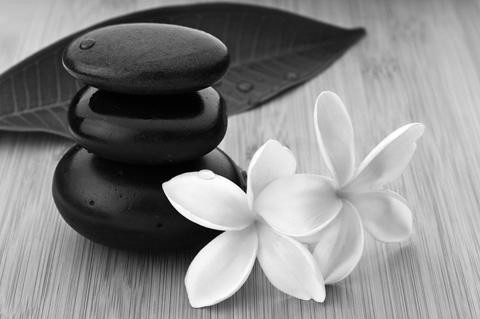

Besszer Mónika

laktációs (szoptatási) szaktanácsadó (IBCLC)
perinatális (szülés körüli) szaktanácsadó
babamasszázs oktató
ICST (kranioszakrális specialista)
Telefon: +36-30/418-3250 | E-mail


Lávaköves masszázs
A lávaköves masszázs során előmelegített természetes, vulkanikus bazaltköveket használok.
Meleg kövekkel simítom, dörzsölöm az izmokat. A mozgások sajátságos ritmusa és a kövek hatása a test egyedülálló, teljes ellazulását idézi elő.
Lávaköves masszázs segíti az érzelmi feszültségek oldását, pozitív hatásával enyhíti az
izomfájdalmakat, feloldja az izommerevséget, felmelegíti a testet, javítja a nyirokkeringést, gyorsítja az anyagcserét, segíti a méregtelenítés folyamatát, erősíti a kötőszöveteket, javítja a vese kiválasztását.
Rendkívül jó depresszió és stresszoldó hatású.
A kismama masszázsnak gyógyító, fájdalomcsillapító, relaxáló és közérzetjavító hatása van. A pocak növekedésével megváltozik a test statikai állapota.
Elsősorban a felső-háti szakasz és a derék tájéka van kitéve fokozott terhelésnek. Az egyre jobban előre domborodó pocak egyensúlyozására a derék tájéki homorulat jelentősen fokozódik.
Emiatt a kismamák medence-gerinc találkozási pontja átmenetileg a fiziológiás tartástól nagymértékben eltér, túlterhelődik. Ez felelős a sokszor még fekve is megmaradó erős derék- és hátfájdalmakért.
Illóolajat használva, a hasat kikerülve hosszú körkörös mozdulatokkal finoman átdolgozom a lábakat, karokat, oldalra fekve pedig a hátat a farizmot és a csípőt. Mindenekelőtt a lazításra kell helyezni a hangsúlyt.
A kismama masszázs előnyös hatásai:
- Enyhíti és oldja a stressz kellemetlen hatásait: az izomgörcsöket, a hát- és derékfájást.
- Megkönnyíti az ellazulást, és megszünteti a feszültséget és a fáradtságot.
- Javítja a várandósság alatti gerinctartást.
- Enyhíti a székrekedést és gyomorégést.
- Segíti a káros anyagcsere termékek kiválasztását és csökkenti a szervezet kóros folyadék-visszatartását.
Fontos tudni, hogy a várandósság korai szakaszában, a 12. hétig masszázst nem végzünk. A második trimesztertől kezdve azonban a kismama masszázs heti gyakorisággal biztonságosan alkalmazható.
